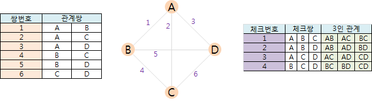
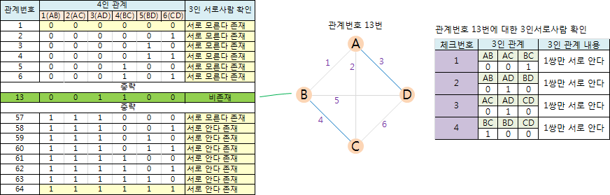
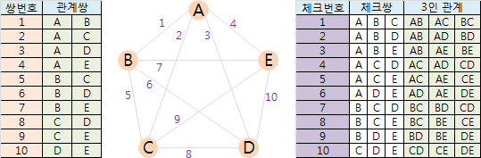
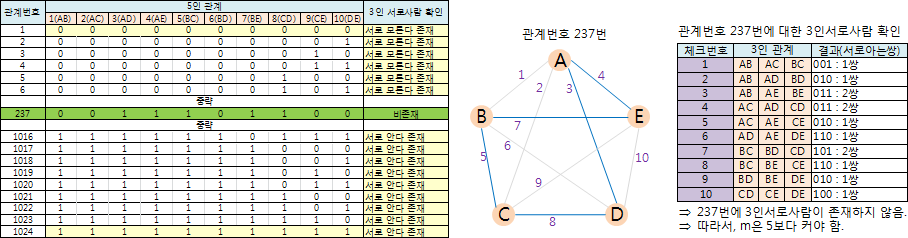
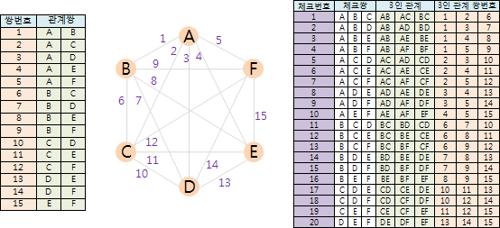
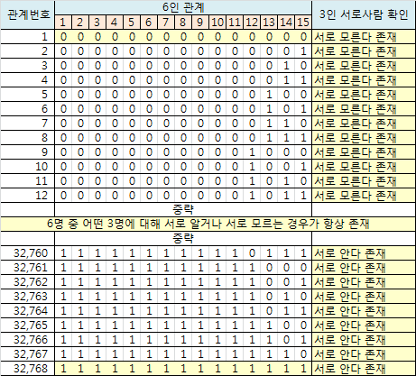
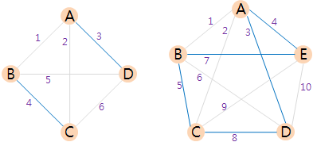
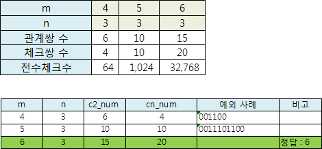

2. 3인서로사람을 만족하는 최소 인원 찾기
임의의 2명에 대해 서로사람 관계인 어떤 집단이 있다.
이 집단에서 임의의 m명을 뽑으면 그 중에서 어떤 3명이 서로사람이 되는 경우가 반드시 있다고 한다. 이때, m의 최소값을 구하고자 한다.
2.1. m=4일 때
4명 중 어떤 2명에 대해서도 서로사람 관계에 있으며, 4명 중 2명씩 지을 수 있는 관계쌍은 모두 6가지이다. 그들의 관계는 각각 서로 아는 경우(1)이거나 서로 모르는 경우(0)이다.
4명 중 3명에 대해 서로사람이 되는지 조사해야 한다. 이렇게 체크해야할 3명에 대한 쌍을 체크쌍이라고 하자. 그러면, 체크쌍의 수는 4가지이다.

4인 관계의 총 수는 2^6인 64개이다.
이 64가지 경우에 대해 각각 4가지 체크쌍으로 조사한다. 이때, 4가지 중에 한 가지라도 3인서로사람이 존재하면 통과이며, 64가지 4인 관계에 대해 모두 통과되면 m은 4로 정답이 되며, 64가지 중 하나라도 3인서로사람이 존재하지 않으면 m은 4보다 커야 한다.
* 사실 64가지 모두 체크해볼 필요는 없다. 중복된 거 빼면 16가지(혹은 그 이하)만 체크해도 충분하며, 이에 대한 건 추후에 기회가 되면 별도로 다룬다.
m=4일 때, 관계번호 13에서 3인서로사람이 존재하지 않음이 아래와 같이 발견되었다.
즉, m은 4보다 커야 한다.

2.2. m=5일 때
5명 중 2명씩 지을 수 있는 관계쌍은 모두 10가지이다.
5명 중 3명에 대해 서로사람이 되는지 조사해야 하는 체크쌍 역시 10가지이다.

5인 관계의 총 수는 2^10인 1024개이다.
이 1024가지 경우에 대해 각각 10가지 체크쌍으로 조사한다. 이때, 10가지 중에 한 가지라도 3인서로사람이 존재하면 통과이며, 1024가지 5인 관계에 대해 모두 통과되면 m은 5로 정답이 되며, 1024가지 중 하나라도 3인서로사람이 존재하지 않으면 m은 5보다 커야 한다.
m=5일 때, 관계번호 237에서 3인서로사람이 존재하지 않음이 아래와 같이 발견되었다.
즉, m은 5보다 커야 한다.

여기까지 보면 궁금증이 생길 것이다.
기하학적인 방법으로 간단하게 증명할 방법은 없을까? -> 필자는 발견하지 못함.
확인해야할 양이 엄청난데 이걸 어떻게 손으로 일일이 할 수 있을까? -> 그렇다, 필자는 컴퓨터 프로그램을 짜서 계산했다.
원리를 이해했다면 엑셀로도 계산할 수 있다.
그러면, m이 아무리 커져도 프로그램으로 간단하게 계산될까? -> 그건 별도 글에서 다루고자한다.
2.3. m=6일 때
이제 확인해야할 양이 상당히 늘어난다.
관계쌍의 수는 15, 체크쌍의 수는 20, 관계번호의 수는 32768이다.
즉, 32768가지 각각에 대해 20번씩 체크를 해야한다.

이번에도 답이 아니면 m=7에 대해서도 조사해야한다. 결과는 다행히 m=6에서 그쳤다.
즉, 임의의 6명을 뽑더라도 그 중 어떤 3명은 서로 알거나 서로 모르는 경우(3인서로사람)가 항상 존재한다.

3. 정리
문제) 임의의 2명에 대해 그 두 명은 서로 알거나 서로 모르는 사이인 어떤 집단이 있다. 이 집단에서 임의의 m명을 뽑으면 그 중에서 어떤 3명이 서로 알거나 서로 모르는 경우가 항상 존재하는 m의 최소값은 얼마인가?
풀이)
m=4일 경우, 아래와 같은 예외사례(4명 중 어떤 3명을 뽑아도 그 3명이 서로 아는 경우나 서로 모르는 경우가 존재하지 않음)가 있으므로 4는 정답이 아님.
마찬가지로 m=5일 경우에도 아래와 같은 예외사례가 있으므로 5는 정답이 아님.
m=6일 경우, 이러한 예외사례가 없이 임의의 6명에 대해 그 중 3명은 서로 알거나 서로 모르는 경우가 항상 존재한다(이에 대한 증명은 32768가지 경우를 출력하면 되는데 여기선 생략한다).

정답) 6명
다음 과제
m이 커질수록 체크해야할 수는 급격히 늘어난다.
다행히 3인서로사람에 대한 최소값은 6으로 마무리되었다.

그렇다면, 4인서로사람에 대한 m의 최소값은 얼마일까?
최초 작성일 : 2019.2.6